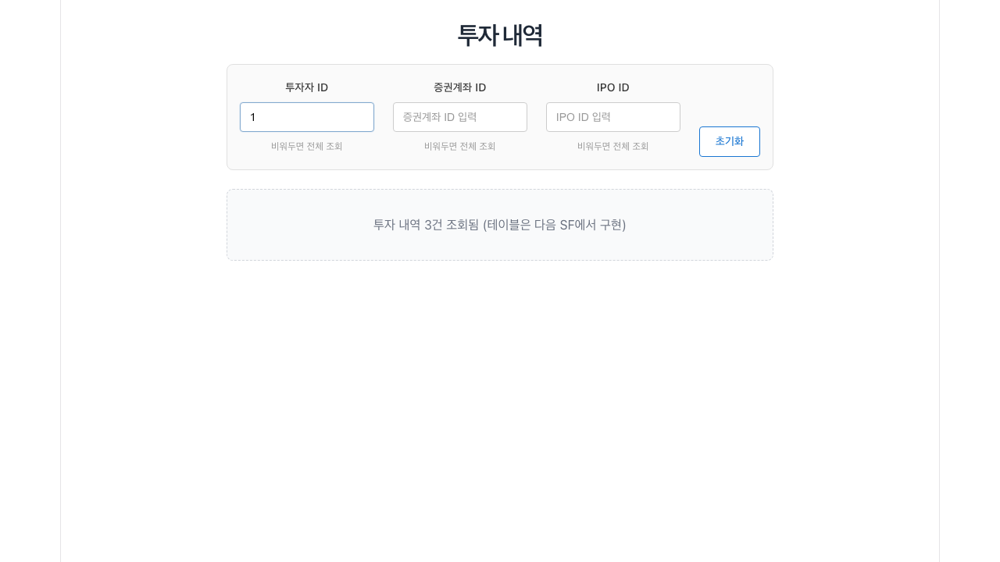
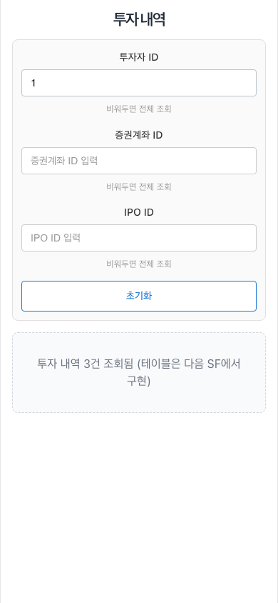
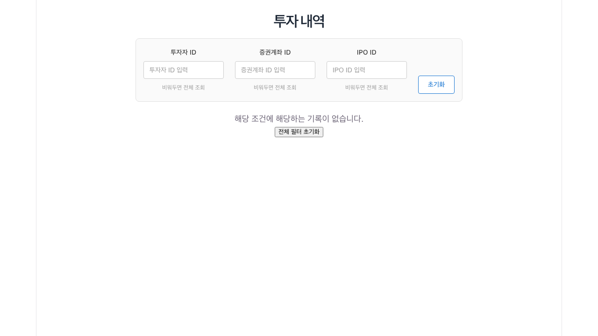
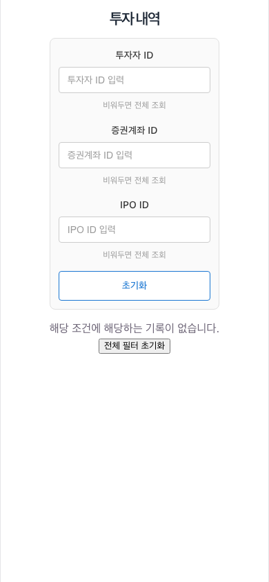

1. 조건으로 투자 내역 조회
조건 칸에 ID를 입력해 투자 내역을 좁히는 화면입니다.
화면의 목적
청약·배정·매도가 연결된 투자 내역을 한 번에 조회하는 시작 지점입니다. 세 조건 칸은 모두 비워 두면 전체 내역을 조회하고, 한 칸 이상 채우면 그 조건에 해당하는 내역만 조회합니다.
조회 규칙: 투자자 ID, 증권계좌 ID, IPO ID는 각각 선택이 아니라 ID를 직접 입력합니다. 칸마다 비워두면 전체 조회 안내가 함께 표시됩니다.
주요 입력 필드
- 투자자 ID: 특정 투자자의 내역만 볼 때 입력
- 증권계좌 ID: 특정 계좌의 내역만 볼 때 입력
- IPO ID: 특정 공모주 회차만 볼 때 입력
- 초기화: 세 조건을 모두 비우고 전체 조회로 되돌림
사용 흐름
- 조회할 조건의 ID를 입력 칸에 넣습니다.
- 조건이 바뀔 때마다 결과가 다시 조회됩니다.
- 아무 조건도 원치 않으면 초기화를 선택합니다.


이 화면은 현재 조회된 내역의 건수만 보여 줍니다. 건수 옆 문구에 표가 아니라 대기자 상태를 유지하고 있으며, 내역을 표 형태로 보는 기능은 다음 단계에서 추가됩니다.
2. 결과가 없는 경우
조건에 맞는 기록이 없을 때 표시되는 안내 화면입니다.
화면의 목적
조건에 해당하는 기록이 없으면 빈 화면 대신 이유를 알려 주는 문구와 초기화 버튼을 표시합니다. 입력한 ID가 잘못되었는지 바로 확인할 수 있습니다.
확인 순서: ID를 다시 확인하고, 조건을 지우면 전체 목록이 조회되는지 먼저 보세요. 전체 조회에서도 결과가 없으면 아직 청약을 등록하지 않은 경우입니다.
안내 문구와 동작
- 해당 조건에 해당하는 기록이 없습니다. 조회 결과가 0건임을 안내
- 전체 필터 초기화 세 조건을 비우고 전체 조회로 되돌리는 버튼
- 초기화(필터 영역) 필터 입력 칸을 초기화하는 버튼
사용 흐름
- 안내 문구가 표시된 상태를 확인합니다.
- ID 오타나 잘못된 조건을 확인합니다.
- 전체 필터 초기화를 눌러 전체 조회로 되돌립니다.


조회 중에는
투자 내역을 불러오는 중... 문구가 잠시 나타나고, 조회 실패 시 화면 상단에 오류 문구가 표시됩니다.